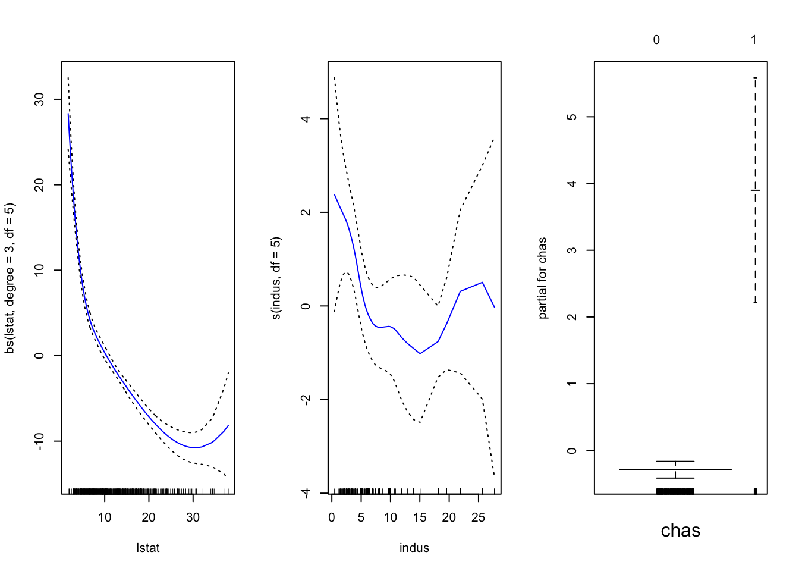

Chapter 8 GAMs
We use the library(gam) package. Below is an example using the Boston data again.
library(gam)
names(Boston)## [1] "crim" "zn" "indus" "chas" "nox" "rm" "age"
## [8] "dis" "rad" "tax" "ptratio" "black" "lstat" "medv"In this example we build a GAM using a cubic spline with 3 degrees of freedom for lstat, a smoothing spline with 3 degrees of freedom for indus and a simple linear model for variable chas. But first we make chas a categorical variable.
Boston1 = Boston
Boston1$chas = factor(Boston1$chas)GAM Function
We use the gam() function which has the syntax gam( response ~ predictors + ..., data = data). The way to specify what the model of each predictor is is similar to lm().
bs()is used for a regression splinens()is used for natural spliness()is used for smoothing splines (this is different fromlmand how smoothing splines are done normally).
gam = gam( medv ~ bs(lstat, degree = 3, df = 5) + s(indus, df = 5) + chas, data = Boston1 )Plotting
We have the option to include standard error error bars or not.
par( mfrow = c(1,3) )
plot( gam, se = TRUE, col = "blue" )
Prediction
Prediction works the same as with lm() for multiple linear regression models.
preds <- predict( gam, newdata = data.frame( chas = "0", indus = 3, lstat = 5 ) )
preds## 1
## 32.10065